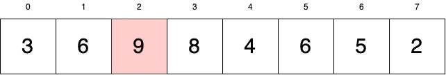

Sorting Algorithms: Bubble Sort
Detailed understanding of the working of the Bubble Sort algorithm and its implementation in C++
In this article, I'll be covering bubble sort algorithm. Most programming languages will come with a built-in sort function but in order to write better code, you need to know what's going on in the background. If you are preparing for software engineering interviews, it's very likely that this sorting algorithm may come up during your interviews.
What is a Bubble Sort?
Bubble sort is one of the simplest and intuitive sorting algorithms to understand. Its implementation in code is fairly straightforward as well. One of the great things about Bubble Sort is that learning it teaches you a lot about complexity analysis and will prepare you to understand more difficult and more optimal sorting algorithms.
Fancy algorithms are slow when N is small, and N is usually small.
- Rob Pike
How Does It Work?
Let's have a look at the array we want to sort:

We want to sort this array in ascending order.
In Bubble Sort, we iterate through the array multiple times and swap values until they are all in the correct order. More specifically, when we iterate through the array, we check if the current number is greater than the number adjacent to it. If so, we swap the two numbers in-place.
Doing these swaps in-place is important to note. We do not need extra memory to perform Bubble Sort.
After we traverse through the whole array, we check if any swaps have been done during the iteration. If we have done swaps, we need to iterate through the array again to make sure everything is sorted. If any values are still not ordered, we perform swaps again and we repeat the process of traversing the whole array until it is completely sorted and no more swaps are needed. Visualizing this process makes it even clearer:
Let's start at the beginning of our array. Our current value is 6:
Is 6 less than or equal to 3? (i.e. Are they in the correct order?). No, so we need to swap the two values.
Our current value is now at position 1. Let's look at the next value to the right. Is 6 less than or equal to 9? Yes. At this point, 6 will remain at this position and we change our current value to 9.
9 is greater than 8. Let's swap them.
9 is greater than 4. Let's swap.
9 is greater than 6. Let's swap.

9 is greater than 5. Let's swap.
9 is greater than 2. Let's swap.
9 does not have any values to swap with. Its Bubbled Up to the end of our array. This is the essence of Bubble Sort. Larger values bubble up to the end of the array until the array is sorted.
At this point, we have completed one iteration in the array. We ask ourselves, did we do any swaps during the iteration? We did lots. In this case, we need to go back and check our array to see if sorting has been completed. Visually, we see that it hasn't of course, but the way to know this in our code is to track swaps.
Sorted values are colored blue. We do not need to work on these values anymore. Let's go through the rest of this array. Our next current value is back at the beginning. Current value = 3.
3 is less than 6. We won't do anything with it. We see that 6 is also less than 8. We won't do anything with that either. Let's move on to 8.
Visually, we see that 8 is greater than all the values to its right until it reaches our sorted 9. 8 will swap with every value just like 9 did until it reaches the position just before 9, completing the iteration.
So, did we perform any swaps? Yes. So let's go for another round.
Like before, 3 is less than 6 so it stays in place and we move on to our next value.

6 swaps with 4. We now compare 6 and 6. Is 6 greater than 6? No. Our current 6 at index 2 will remain there and change our current value to the next 6 at index 3.
We can see visually that our current value will bubble up to just before the 8. We check if we have performed swaps, and indeed we have so let's start again:
And another round:
And another:
Almost there:
Last one!
2 cannot be swapped with anything so our swaps are zero for this round. This means we are done!
Code
#include <bits/stdc++.h>
using namespace std;
void bubble_sort(int arr[], int n) {
// bubble sort
for (int i = n - 1; i >= 0; i--) {
for (int j = 0; j <= i - 1; j++) {
if (arr[j] > arr[j + 1]) {
int temp = arr[j + 1];
arr[j + 1] = arr[j];
arr[j] = temp;
}
}
}
cout << "After Using bubble sort: " << "\n";
for (int i = 0; i < n; i++) {
cout << arr[i] << " ";
}
cout << "\n";
}
int main()
{
int arr[] = {13, 46, 24, 52, 20, 9};
int n = sizeof(arr) / sizeof(arr[0]);
cout << "Before Using Bubble Sort: " << endl;
for (int i = 0; i < n; i++)
{
cout << arr[i] << " ";
}
cout << endl;
bubble_sort(arr, n);
return 0;
}
Output
Before Using Bubble Sort:
13 46 24 52 20 9
After Using bubble sort:
9 13 20 24 46 52
Time & Space Complexity
Time complexity: O(N2), (where N = size of the array), for the
worst, and average
cases.
Space Complexity: O(1)